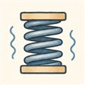
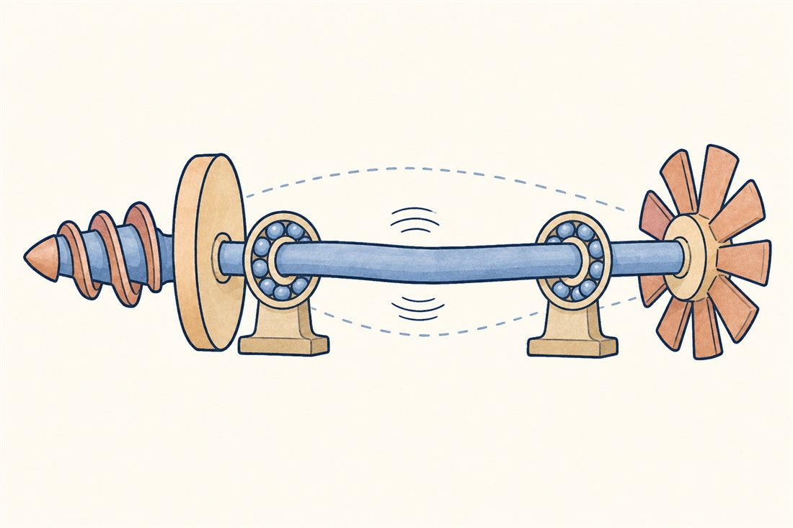
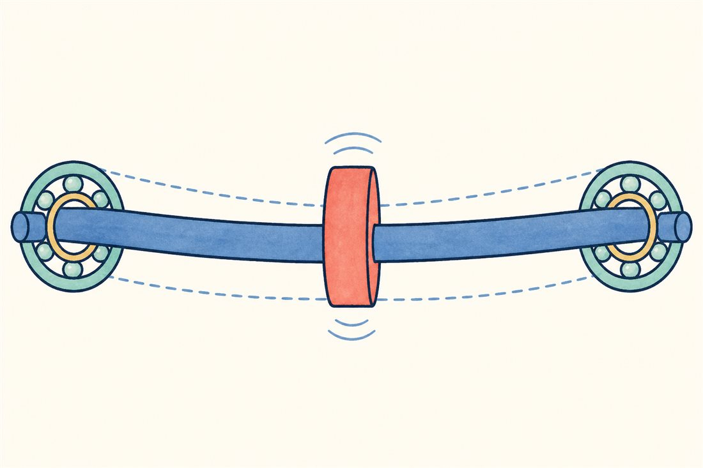
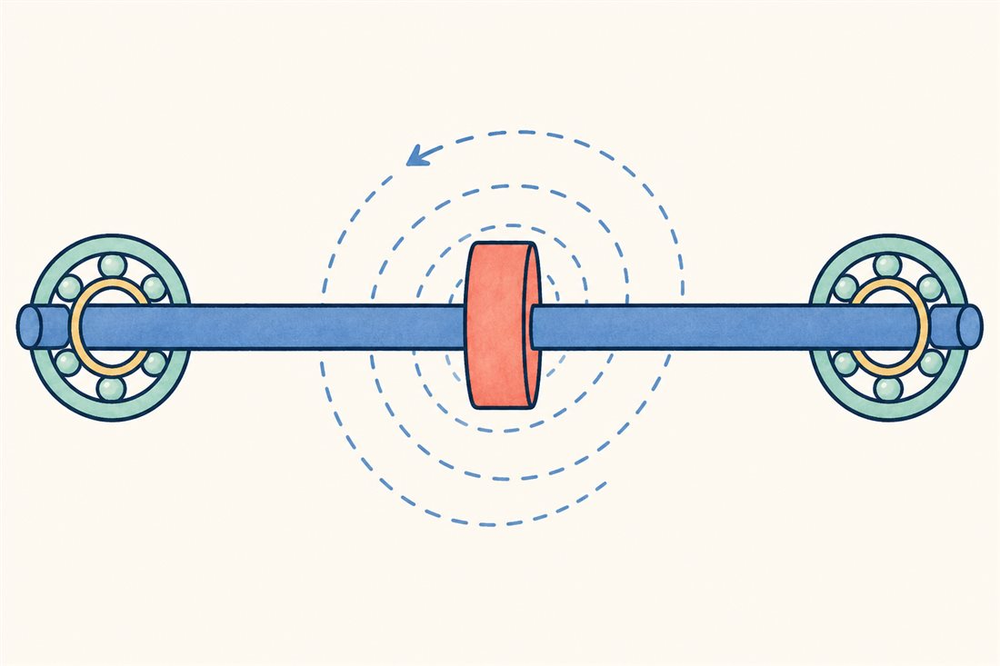
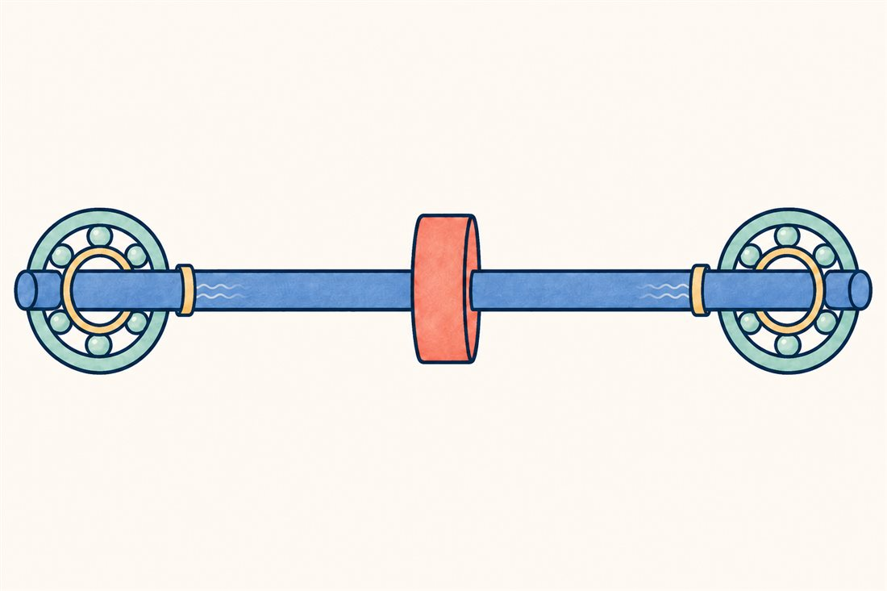

第3巻 だい6わ ── 回転の章まわる軸の ふるえ
ここまで流体の話をしてきましたが、それを全部載せて回っているのは1本の細い軸です。毎分数万回転の軸は、じつはただ回っているのではありません——回りながら、たわみ、ふれまわろうとしています。回転体の力学（ロータダイナミクス）は、ターボポンプ開発でいちばん多くの夜を奪ってきた分野。今日はその主役、危険速度とホワールの話です。

軸のふるえには3つの顔があります。順番に切り替えてみてください——2つめが、この分野でいちばん怖い顔です。



事故調ファイル1976年 — SSMEを止めた見えない渦
スペースシャトル開発の初期、SSMEの高圧燃料ターボポンプ（HPFTP）はサブシンクロナス・ホワール——回転数の半分程度の周波数で軸がふれまわる自励振動——に襲われ、1976年の数ヶ月間、全力運転を封じられました。外から叩かれる振動ではなく、シール隙間などの流体力が自分で自分を育てるループ（第2巻08話のフラッター、第1巻08話のPOGOと同じ文法）。解決策が鮮やかでした——ロータを固くし、そして段間シールを「軸受のように働く減衰シール」に作り替えて、系に剛性と減衰を注ぎ込んだのです。漏れ止めだったはずのシールが、振動を鎮める部品に化けた瞬間で、以後のポンプ設計の常識になりました。
よりみちすきまの流体は、ばねになる
SSMEの解決策の裏には、美しい物理があります。軸がシール隙間の中で片側に寄ると、狭くなった側と広くなった側で流れの絞られ方が変わり、圧力の分布が偏って軸を中心へ押し戻す力が生まれる——ロマキン効果です。つまり適切に設計された環状シールは、漏れを絞りながら中心向きの直接剛性（ばね）を生み、設計次第で直接減衰も併せ持たせられる——ただし旋回流の与える交差剛性は逆に不安定化にも働くので、表面形状や入口旋回の制御まで含めて設計します。前話の浮動リングが「自分で中心に寄る」のも同じ力でした。極低温では油の膜も油のダンパも使えないぶん、推進剤そのものの流体力を減衰に使うのがロケットポンプの流儀です。そしてLE-9は、もっと根本的な手を打ちました——軸を短くして剛性を上げ、LE-7Aで必要だったダンパ機構そのものを不要にした（IHI技報）。ふるえは、鎮めるより生まれさせないのが上策です。
 流体屋のためのノート
流体屋のためのノート
道具立ての地図: 危険速度は回転同期（1×）の共振で、通過設計（マージンを取るか素早く通り抜けるか）の問題。怖いのは非同期の自励系——シール・インペラ隙間などの交差剛性（cross-coupled stiffness）が入れる接線方向の力が系の有効減衰に打ち勝つと、不安定化したモードの固有振動数近傍（SSMEの事例では約0.5×）でホワールが育ちます。会計はChilds流のバルクフロー模型でシールの剛性・減衰係数を見積もり、ロータのモード解析と結合する。第2話の旋回キャビテーション（超同期）と合わせると、周波数スペクトルのどこに何が出るかで犯人当てができる——振動スペクトルはターボポンプの聴診器です。タービンの部分流入ノック（第4話）もこの帳簿に載ります。次話は、この繊細な機械の、いちばん乱暴な数秒間。
.jpeg){kind=link}
・SSME HPFTPホワール: Ek, "Solution of the Subsynchronous Whirl Problem..."（NTRS 19770045710ほか）
・ロマキン効果・シール動特性: Brennen ch.10／Childs, Turbomachinery Rotordynamics
・LE-9の短軸化でダンパ不要: IHI技報 Vol.58 No.2